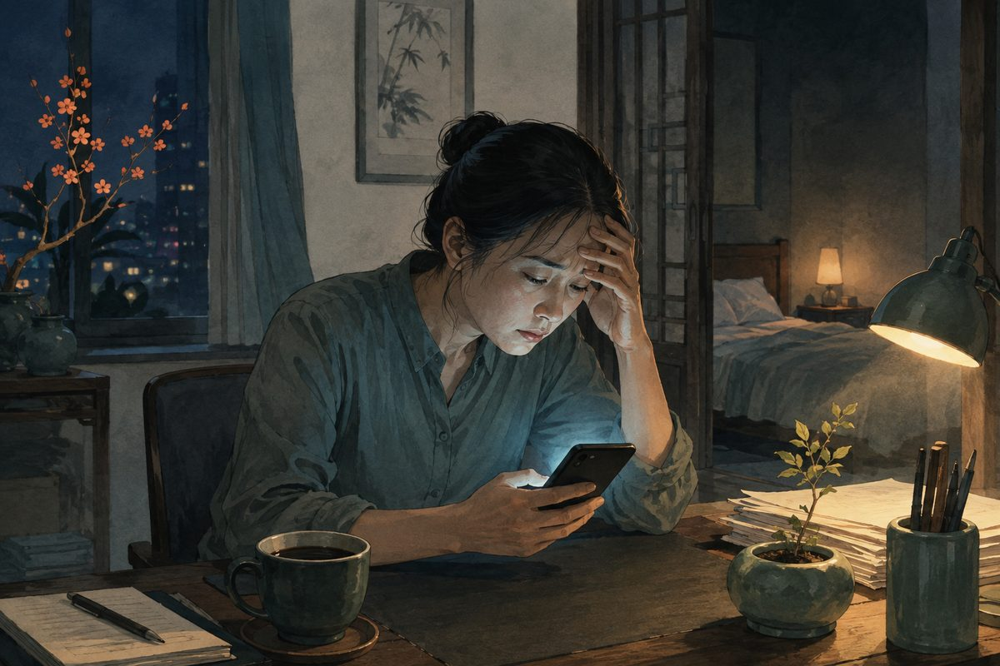

失眠
失眠不只是「睡得少」，也可能表現為躺很久仍睡不著、半夜反覆醒來、太早醒，或明明睡了一晚，白天仍覺得精神不濟。要了解失眠，除了看睡眠時間，也要一起評估作息、壓力、身體不適、用藥與白天功能。
你是否有這些困擾？
- 躺下後很久仍無法入睡
- 半夜醒來多次，醒後不容易再睡
- 清晨太早醒來，睡眠時間不足
- 睡醒後仍覺得疲倦、頭腦不清楚
- 白天注意力下降、容易煩躁或想睡
- 越擔心睡不著，晚上反而越清醒
失眠是什麼？
失眠是指在有適當睡眠時間與環境的情況下，仍持續出現入睡、維持睡眠或睡眠品質不佳，並影響白天活動。短期失眠常與壓力、環境或作息改變有關；若一週多次發生並持續數月，就需要更完整的睡眠與健康評估。
每個人需要的睡眠時間不同，不能只用固定時數判定失眠。真正需要注意的是睡眠問題是否反覆出現，以及是否已影響工作、情緒、記憶、學習或日常安全。
常見表現
入睡困難
上床後思緒停不下來、身體難以放鬆，或需要很久才能入睡。壓力、晚間使用電子產品、咖啡因及不固定的作息都可能影響入睡。
睡眠中斷
半夜反覆醒來，可能與環境、疼痛、夜尿、呼吸問題、酒精、藥物或情緒狀態有關。醒來後若開始看時間並擔心隔天精神，可能讓再次入睡更困難。
過早醒來與睡眠品質不佳
比預定時間提早醒來，或睡眠感覺很淺，即使躺床時間足夠，白天仍容易疲倦、注意力下降或情緒不穩。
常見相關因素
- 工作、照顧壓力或生活事件
- 睡眠時間每天差異很大
- 晚間使用手機、電腦或長時間接觸強光
- 咖啡因、尼古丁、酒精或睡前吃得太晚
- 疼痛、鼻塞、咳嗽、胃食道逆流或夜尿
- 更年期、甲狀腺及其他身體狀況
- 焦慮、憂鬱或其他情緒問題
- 部分處方藥、感冒藥或保健品

哪些人比較容易出現睡眠困擾？
作息不固定、輪班、長期承受工作或照顧壓力，或伴隨疼痛、更年期不適與情緒困擾的人，可能較容易出現睡眠問題。有這些因素不代表一定罹患失眠，仍需一起評估睡眠機會與白天功能。
可以先記錄什麼？
建議記錄一至兩週的睡眠日誌，包括上床時間、大約入睡時間、夜間醒來次數、最後起床時間、午睡、咖啡因與酒精、運動、晚餐及白天精神。記錄的目的不是要求每天睡得完美，而是找出可能的規律。
什麼情況需要盡快就醫？
若睡眠問題已明顯影響工作、開車或日常安全，應儘快接受評估。若睡覺時有大聲打鼾、喘醒、呼吸暫停，或白天無法控制地嗜睡，需要排除睡眠呼吸相關疾病。若同時出現嚴重憂鬱、情緒異常高亢、行為明顯改變或傷害自己的念頭，應立即尋求專業協助。
連邦中醫如何評估失眠？
醫師會先區分入睡困難、睡眠中斷、過早醒來與睡眠品質不佳，再了解白天精神、工作型態、飲食、排便、月經或更年期狀態、壓力及目前用藥。若有睡眠日誌，也能協助整理症狀時間軸。
脈診辨證會與問診結果一起使用，評估目前身體狀態及適合的中醫內科方向。若懷疑睡眠呼吸中止、甲狀腺問題、嚴重情緒障礙或其他疾病，仍需安排相應檢查與治療。
中醫診療方向
中醫辨證會區分難以入睡、睡眠淺、多夢易醒、早醒或醒後難再入睡，並結合情緒、食慾、心悸、口乾、怕冷怕熱、排便與脈象判斷。常見方向包括：
心脾兩虛
多夢易醒、心悸健忘，並伴隨精神疲倦、食慾較差或面色少華。治療以益氣健脾、養血安神為主。
心腎不交或陰虛火旺
入睡困難、心煩，可能伴隨口乾、夜間出汗、耳鳴或腰膝痠軟。治療著重滋陰清熱、交通心腎。
肝鬱化火或痰熱擾心
情緒緊繃、煩躁易怒時特別難睡，或伴隨口苦、胸悶、頭重、胃口不適。治療會依表現採取疏肝清熱，或化痰和中、寧心安神的方向。
實際情況常有虛實夾雜，不能只憑單一症狀判定證型。
連邦中醫的治療方式
睡眠問診與脈診辨證
先區分入睡困難、夜間易醒、早醒、多夢或醒後難再入睡，再了解白天精神、情緒、食慾、排便與目前用藥，配合脈象判斷主要證型。
單味藥組方
依心脾兩虛、心腎不交、陰虛火旺、肝鬱化火或其他兼證選擇藥味。後續會比較入睡時間、夜醒次數、白天精神與身體反應調整處方，不以同一張方處理所有失眠型態。
針灸調理
若同時有壓力緊繃、肩頸僵硬或自律神經相關不適，可依患者接受度與整體狀況評估是否搭配針灸。若正在使用安眠藥、抗焦慮藥或其他精神科藥物，不應自行減量或停藥。
慢性失眠的整體照護
慢性失眠通常優先考慮失眠認知行為治療（CBT-I），由受過訓練的專業人員協助調整睡眠行為與對睡眠的擔憂。一般作息建議不能完全取代 CBT-I；需要時可與睡眠或身心相關專科共同安排。
日常照護
- 每天盡量維持接近的起床時間
- 睡前降低光線與刺激，避免長時間滑手機
- 下午後觀察咖啡因是否影響睡眠
- 酒精可能讓人較快入睡，但也可能使睡眠變淺、夜間易醒
- 白天安排規律活動，避免在接近睡前時進行過度激烈運動
- 若躺床後長時間清醒，可先離床進行安靜活動，產生睡意後再回床
常見問題
失眠可以用中醫治療嗎？
可以。中醫不只處理「睡不著」，還會區分入睡困難、容易醒、多夢、早醒，以及白天疲倦、心悸、焦慮、腸胃不適等伴隨症狀。透過辨證用藥、針灸與作息調整，可以幫助改善入睡困難、減少夜間醒來，並提升白天精神與睡眠品質。
中醫治療失眠效果好嗎？
中醫治療失眠通常能帶來很好的幫助。醫師會從壓力、作息、自律神經與身體狀況找出影響睡眠的原因，再依個人體質安排中藥或針灸調理。許多患者在持續治療後，入睡時間、夜醒次數、睡眠深度與白天精神都能逐步改善。
睡不滿八小時就是失眠嗎？
不一定。每個人的睡眠需求不同，應同時觀察睡眠是否穩定，以及白天精神與功能是否受到影響。
週末補眠可以改善平日失眠嗎？
偶爾延長睡眠可能減少疲倦，但如果週末與平日作息差異太大，也可能讓睡眠節律更不穩定。通常先固定起床時間較容易觀察變化。
安眠藥可以自己停嗎？
不建議。部分藥物需要逐步調整，突然停藥可能出現反彈性失眠或其他不適，應與原開藥醫師討論。
🏥 讓專業團隊成為您的健康後盾
就診前可先準備一至兩週睡眠紀錄，以及目前使用的處方藥、成藥與保健品，由醫師安排問診與脈診辨證。
105 臺北市松山區南京東路四段69號1樓